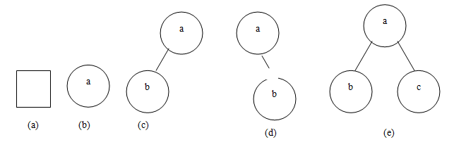
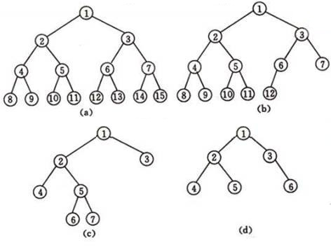
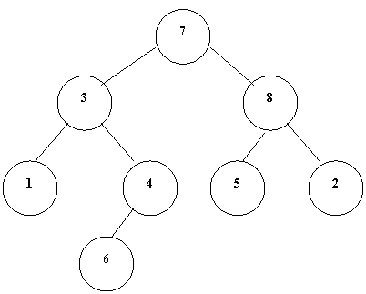
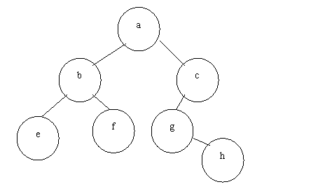
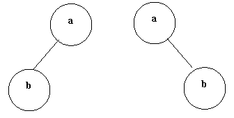
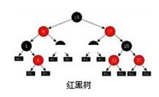
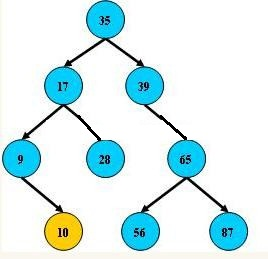
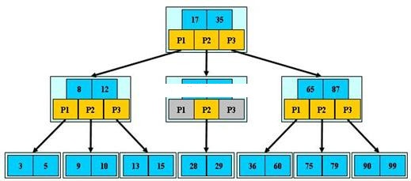
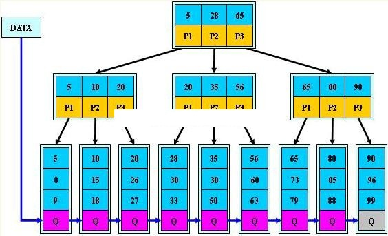
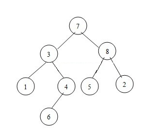

第五章：树
5.1 树的定义

首先，与前面的数据结构不同，树是一种重要的非线性数据结构。树是由一个或多个结点组成的有限集合，其中：
必有一个特定的称为根(ROOT)的结点；
剩下的结点被分成ｎ>=0个互不相交的集合T1、T2、......Tn，而且， 这些集合的每一个又都是树。树T1、T2、......Tn被称作根的子树(Subtree)。
树的递归定义如下：
至少有一个结点（称为根）
其它是互不相交的子树。
树的度：结点的分支数。以组成该树各结点中最大的度作为该树的度;树中度为零的结点称为叶结点或终端结点。树中度不为零的结点称为分枝结点或非终端结点。除根结点外的分枝结点统称为内部结点。
树的深度：组成该树各结点的最大层次，从1开始计数；
有序树：指树中同层结点从左到右有次序排列，它们之间的次序不能互换，这样的树称为有序树，否则称为无序树。
5.2 二叉树、完全二叉树、满二叉树
二叉树是每个结点至多只有两棵子树，度不能大于2，并且二叉树的子树有左右之分，左右次序不能改变。
二叉树的五种基本形态：
（a）空二叉树
（b）只有一个根节点的二叉树
（c）只有左子树
（d）只有右子树
（e）完全二叉树
一颗深度为K且有2k-1个结点的二叉树称为满二叉树。
对二叉树的结点进行连续编号，约定编号从根节点起，自上而下，自左至右。深度为k，有n个结点的二叉树，当且仅当其每一个结点都与深度k的满二叉树中编号从1到n的结点一一对应时，称之为完全二叉树。
a：满二叉树；b：完全二叉树；c，d:非完全二叉树
二叉树的第i层上至多有2i-1个结点(i>=1)
深度为k的二叉树至多有2k-1个结点(k>=1)
具有n个结点的完全二叉树的深度为：
5.3 二叉树存储结构
二叉树的结点存储结构如下：
typedef struct _btree
{
int val;
struct _btree *left;
struct _btree *right;
}Btree, *PBtree;
val是结点中存放的数据，left和right是该结点的左右子树。
5.4 二叉树创建
用下面的递归算法来创建一棵树：
btree* create_tree()
{
int value = 0;
scanf("%d", &value);
if(value==0)//输入零，表示左或右子树为空
{
return NULL;
}
btree *t = (btree *)malloc(sizeof(btree));
if(t==NULL)
{
return NULL;
}
memset(t,0,sizeof(btree));
t->value = value;
//递归创建左右子树：
printf("Please create the left tree of %d\n",value);
t->left = create_tree();
printf("Please create the right tree of %d\n",value);
t->right = create_tree();
return t;
}
5.5 二叉树遍历
遍历是对树的一种最基本的运算，所谓遍历二叉树，就是按一定的规则和顺序走遍二叉树的所有结点，使每一个结点都被访问一次，而且只被访问一次。由于二叉树是非线性结构，因此，树的遍历实质上是将二叉树的各个结点转换成为一个线性序列来表示。
设L、D、R分别表示遍历左子树、访问根结点和遍历右子树， 则对一棵二叉树的遍历有三种情况：DLR（称为先根次序遍历，即先序遍历），LDR（称为中根次序遍历，即中序遍历），LRD （称为后根次序遍历，即后序遍历）。这里的先序，中序和后序都是以根为标准。

5.5.1 先序遍历
先序遍历的方法：
访问根；按先序遍历左子树；按先序遍历右子树。
上图在先序遍历下的序列是：7,3,1,4,6,8,5,2
先序遍历的递归算法：
void preorder(btree *t)
{
if(t == NULL)
return;
printf(“%d”, t->data);
preorder(t->left);
preorder(t->right);
}
5.5.2 中序遍历

中序遍历的方法：
按中序遍历左子树；访问根；按中序遍历右子树。
上图在中序遍历下的结点序列：1,3,6,4,7,5,8,2
中序遍历的递归算法：
void inorder(btree *t)
{
if(t==NULL)
return;
inorder(t->left);
printf(“%d”, t->data);
inorder(t->right);
}
5.5.3 后序遍历
后序遍历的方法：
按后序遍历左子树；按后序遍历右子树；访问根。
上图在后续遍历下的结点序列：1,6,4,3,5,2,8,7
void postorder(btree *t)
{
if(t==NULL)
return;
postorder(t->left);
postorder(t->right);
printf(“%d”, t->data);
}
注意：前序（后序）、中序确定一颗树；前序、后序无法确定一颗树
比如有一棵树，它的
前序遍历结点顺序: abefcgh
中序遍历结点顺序: ebfaghc
试画出这棵树。
分析：主要思路就是利用前序遍历中的头结点在中序中的位置，将中序遍历分成左右2个子树。然后依次递归。
在前序遍历中，第一个节点a为树根,则在中序中找到a，将中序序列一分为二：ebf，ghc。ebf显然为左子树的中序遍历，ghc为右子树的中遍历。而在前序遍历可以知道中序遍历的ebf的前序遍历是bef，中序遍历的ghc的前序遍历是cgh。依次类推，b把中序遍历中的ebf分成了左右子树e,f。c将中序遍历中的ghc分成了左子树gh，右子树NULL。而中序遍历的gh，在前序遍历中是gh，因此g将gh分成了左子树NULL，右子树h。
于是整个图为：
知道一棵树的前序和中序，或者后序和中序，可以确定一棵树，但是如果只知道前序和后序，是无法确定一棵树的。比如下面的例子：
前序：a,b；后序：b,a，可以画出下面2种形态的树：
5.6 二叉排序树与平衡二叉树
二叉排序树是这样一棵树：所有非叶子结点至多拥有两个儿子（Left和Right）；所有结点存储一个关键字；非叶子结点的左指针指向小于其关键字的子树，右指针指向大于其关键字的子树；
含有n个结点的二叉排序树却是不唯一的。所以对于含有同样关键字序列的一组结点，结点插入的先后次序不同，所构成的二叉排序树的形态和深度不同。而二叉排序树的平均查找长度ASL与二叉排序树的形态有关，二叉排序树的各分支越均衡，树的深度浅，其平均查找长度ASL越小。
由此可见，在二叉排序树上进行查找时的平均查找长度和二叉排序树的形态有关。在最坏情况下，二叉排序树是通过把一个有序表的n个结点插入生成的，由此得到二叉排序树退化为一棵深度为n的单支树，它的平均查找长度和单链表上的顺序查找相同，也是（n+1）/2。在最好情况下，二叉排序树在生成过程中，树的形态比较均匀，最终得到的是一棵形态与二分查找的判定树相似的二叉排序树，就平均性能而言，二叉排序树上的查找和二分查找相差不大，并且二叉排序树上的插入和删除结点十分方便，无需移动大量结点。因此，对于需要经常做插入、删除、查找运算的表，宜采用二叉排序树结构。由此，人们也常常将二叉排序树称为二叉查找树。
平衡二叉排序树是一种改进的二叉排序树，一棵平衡二叉排序树或者是一棵空树，或者是一棵任意一结点的左子树与右子树的高度至多差1的二叉树排序树。对于二叉排序树上的任何结点，其平衡因子定义为该结点左子树的高度减去该结点右子树高度。任一结点的平衡因子只可能是-1，0，1。平衡的二叉排序树的查找方法与一般的二叉排序树完全一样，其优点是总能保持查找长度为O(log2n)量级。往平衡的二叉排序树插入新结点时，需要对树的结构进行必要调整，以动态地保持平衡二叉排序树的特点。
5.7 红黑树
红黑树(RB Tree)是平衡二叉树，查找的效率也就一样，为logN。所以在C++的STL库中，set/map，multiset/multimap就是用的红黑树作为底层的数据结构，方便查找与插入删除操作。
红黑树是每个节点都带有颜色属性的二叉查找树，颜色或红色或黑色。在二叉查找树强制一般要求以外，对于任何有效的红黑树增加了如下的额外要求：
性质1： 节点是红色或黑色。
性质2： 根是黑色。
性质3： 每个红色节点的两个子节点都是黑色。(从每个叶子到根的所有路径上不能有两个连续的红色节点)
性质4： 从任一节点到其每个叶子的所有路径都包含相同数目的黑色节点。
这些约束强制了红黑树的关键性质: 从根到叶子的最长的可能路径不多于最短的可能路径的两倍长。结果是这个树大致上是平衡的。因为操作比如插入、删除和查找某个值的最坏情况时间都要求与树的高度成比例，这个在高度上的理论上限允许红黑树在最坏情况下都是高效的，而不同于普通的二叉查找树。
5.8 B树，B+树，B-树
B树
即前面提到的二叉排序（搜索）树：
1.所有非叶子结点至多拥有两个儿子（Left和Right）；
2.所有结点存储一个关键字；
3.非叶子结点的左指针指向小于其关键字的子树，右指针指向大于其关键字的子树；
B-树
是一种多路搜索树（并不是二叉的）：
1.定义任意非叶子结点最多只有M个儿子；且M>2；
2.根结点的儿子数为[2, M]；
3.除根结点以外的非叶子结点的儿子数为[M/2, M]；
4.每个结点存放至少M/2-1（取上整）和至多M-1个关键字；（至少2个关键字）
5.非叶子结点的关键字个数=指向儿子的指针个数-1；
6.非叶子结点的关键字：K[1], K[2], …, K[M-1]；且K[i] < K[i+1]；
7.非叶子结点的指针：P[1], P[2], …, P[M]；其中P[1]指向关键字小于K[1]的子树，P[M]指向关键字大于K[M-1]的子树，其它P[i]指向关键字属于(K[i-1], K[i])的子树；
8.所有叶子结点位于同一层；
B+树
B+树是B-树的变体，也是一种多路搜索树：
1.其定义基本与B-树同，除了：
2.非叶子结点的子树指针与关键字个数相同；
3.非叶子结点的子树指针P[i]，指向关键字值属于[K[i], K[i+1])的子树（B-树是开区间）；
5.为所有叶子结点增加一个链指针；
6.所有关键字都在叶子结点出现
思考题：编码求一棵树中2个结点的最近公共结点。
如下图所示：结点1和6的最近公共结点是3。
提示:2个结点的最近公共结点的本质是这2个结点，一个在某个结点的左子树，一个在某个结点的右子树，那么该结点必然是这2个结点的最近公共结点。因此，只要在遍历该树的时候，对于遍历中的每一个结点，判断这2个结点是不是分别在这个结点的左右子树上，如果是，则该结点即为最近公共结点。如果这2个结点都在该结点的左子树，那么就递归判断左子树；在右子树，就递归判断右子树。
本页共164段，5587个字符，11951 Byte(字节)